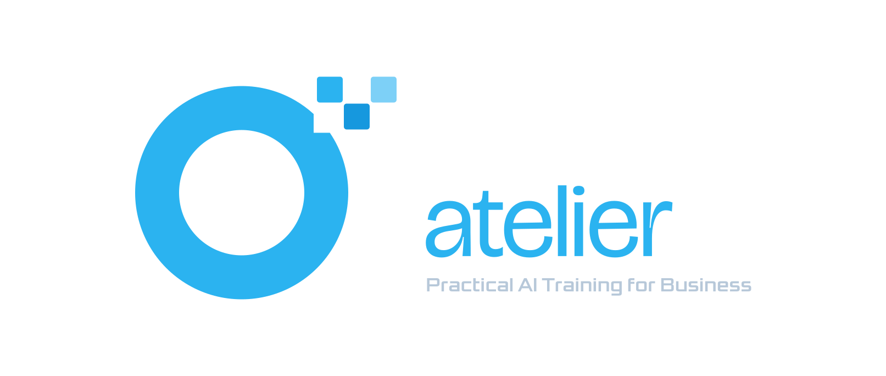

마케팅 · 제안 · 견적 · 대응 · 협상 · 분석Marketing · Proposals · Quotes · Response · Negotiation · Analysis
전시회 준비, 견적 근거, 당일 미팅 자료, 경영전략회의 자료를 웹 한 장으로Trade-show prep, quote evidence, same-day meeting decks and strategy reviews, each on one web page
영업·마케팅, 제조, 품질, 기획 등 다양한 업무 일선에서 쌓은 경험을 바탕으로, 실제 제조 업무에서 AI와 바이브코딩으로 만든 결과물을 직접 보여 드립니다.Drawing on hands-on work across sales and marketing, manufacturing, quality and planning, we show real results built with AI and vibe coding for everyday manufacturing work.
왜 이 과정인가Why this course
일반 AI 활용 교육은 제조업에서 일해 보지 않은 강사가 진행하는 경우가 많아 만족도가 낮다는 의견이 많았습니다. 이 과정은 제조 현장의 업무에서 출발합니다.Many people told us general AI courses fell short because the instructors had never worked in manufacturing. This course starts from the work done on the factory floor.
모든 사례는 영업·구매·생산·품질·경영지원 부서에서 실제로 AI와 함께 만든 결과물입니다. 강의에서는 회사와 고객 이름을 가상으로 바꿔 보여 드립니다.Every case was really built with AI in sales, purchasing, production, quality or business support. Company and customer names are replaced in the lectures.
정비사처럼 코드를 다 알 필요는 없습니다. 무엇을 만들지 정하고, 이 순서를 몸에 익힙니다.You don't need to know the code like a mechanic. Decide what to make, then make this loop a habit.
요청Ask→코드Code→확인Check→수정Fix
누구를 위한 과정인가Who it's for
중소·중견 제조기업의 여섯 부서 실무자가 대상입니다.For staff in six departments at small and mid-sized manufacturers.
전시회 준비, 견적 근거, 당일 미팅 자료, 경영전략회의 자료를 웹 한 장으로Trade-show prep, quote evidence, same-day meeting decks and strategy reviews, each on one web page
생산능력 플래너, 작업절차서(SOP) 웹, 검사성적서, SPC 관리도, 8D 보고서Capacity planner, SOP web pages, inspection reports, SPC charts, 8D reports
디자인 시스템 한 장으로 홈페이지 · 고객 포털 · 사내 문서 · 관리 화면을 한 회사처럼One design system makes the website, customer portal, internal documents and admin screens look like one company
커리큘럼Curriculum
무엇을 만들 수 있는지 보고, 시작하는 법을 익히고, 부서별 사례를 본 뒤, 나를 위한 첫 결과물로 마무리합니다.See what AI can make, learn how to start, look at department cases, and finish with a first piece of your own.
1교시Period 1
2교시Period 2
재료를 통째로 넣고Give it all the material→구조부터 묻고Ask for the structure first→회사 디자인을 붙이고Apply the company design→숫자와 결론은 사람이 검증A person checks numbers and conclusions
3교시Period 3
4교시Period 4
수강 후Outcomes

교육 대상과 인원, 희망 시기를 남겨 주시면 일정과 구성을 맞춰 회신드립니다.Tell us who the training is for, how many people and when, and we'll reply with a schedule and plan.
남겨 주신 내용을 검토한 뒤 빠른 시일 안에 회신드리겠습니다.We'll review it and get back to you shortly.